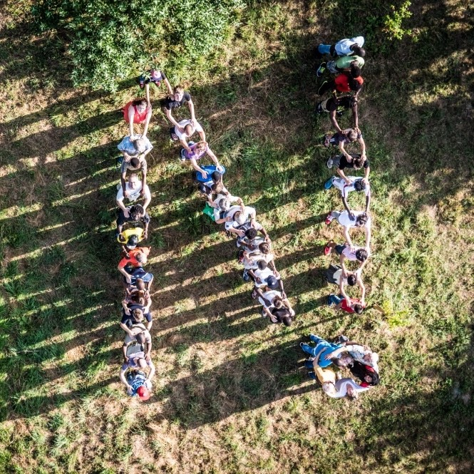

Über uns – Wer wir sind und wofür wir stehen (Test-Entwurf)
ueber-uns.html bleibt bis zu Ihrer Freigabe unverändert.

Miteinander ankommen – Nachbarschaft in Leutenbach und Winnenden
Der Freundeskreis Flüchtlinge Leutenbach & Winnenden ist ein Zusammenschluss engagierter Bürgerinnen und Bürger, die geflüchtete Menschen auf ihrem Weg in ein selbstbestimmtes Leben vor Ort begleiten. Was mit spontaner Nachbarschaftshilfe begann, ist heute ein lebendiges Netzwerk aus Ehrenamtlichen, Unterstützern und vielen neuen Nachbarinnen und Nachbarn aus aller Welt.
Unser Leitgedanke ist ein „offenes Wir“: Wir begegnen einander auf Augenhöhe, hören zu, bauen Brücken zwischen Kulturen und schaffen Orte, an denen niemand allein bleibt.
Was wir konkret tun
- Begegnung & Sprache: Bei unseren regelmäßigen Begegnungstreffen, Sprach-Tandems und Festen entstehen persönliche Kontakte und praktische Übungsmöglichkeiten für die deutsche Sprache.
- Alltag, Behörden & Orientierung: Wir helfen beim Verstehen von Briefen, begleiten zu wichtigen Terminen und unterstützen Familien bei Kindergarten, Schule und Ausbildung.
- Arbeit & Talente sichtbar machen: Mit unserer Schatzsuche entdecken wir berufliche Erfahrungen, handwerkliches Können und Hobbys und vermitteln Kontakte zu Vereinen und Betrieben.
- Praktische Hilfe – Warenhaus & Radwerkstatt: Wir vermitteln gespendete Möbel für Erstausstattungen und machen gespendete Fahrräder in unserer Radwerkstatt wieder verkehrssicher.
Offen, überparteilich und getragen vom Ehrenamt
Wir arbeiten unabhängig, überparteilich und überkonfessionell – in enger Abstimmung mit den Städten und Gemeinden, Kirchen, Schulen, Vereinen und sozialen Trägern in Leutenbach und Winnenden. Jede helfende Hand, jede Sachspende und jede gute Idee ist bei uns herzlich willkommen!